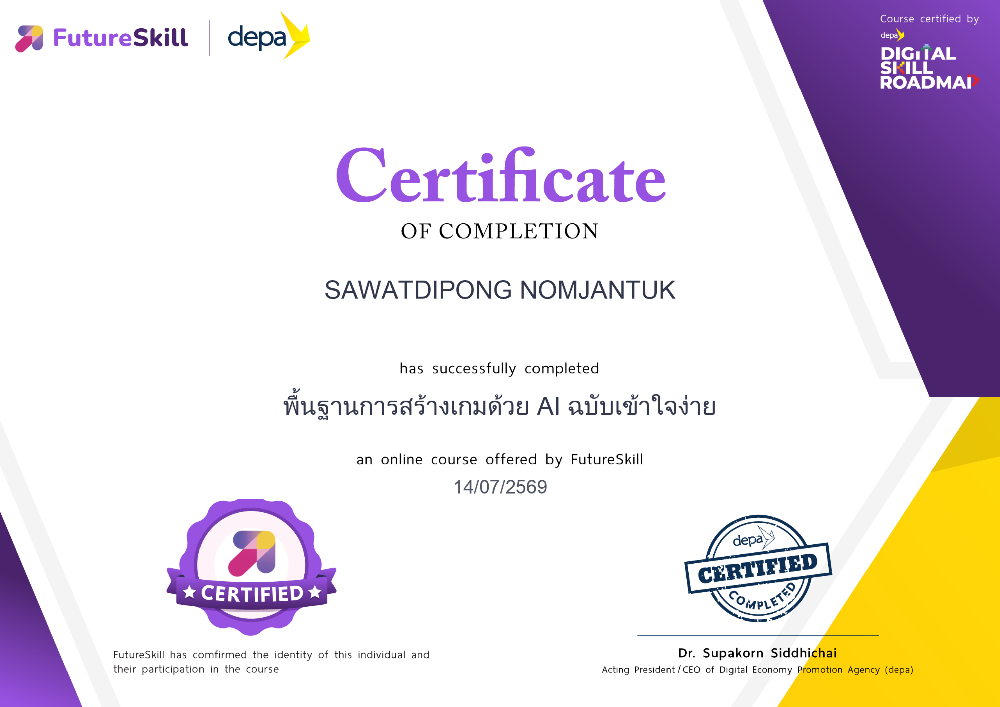
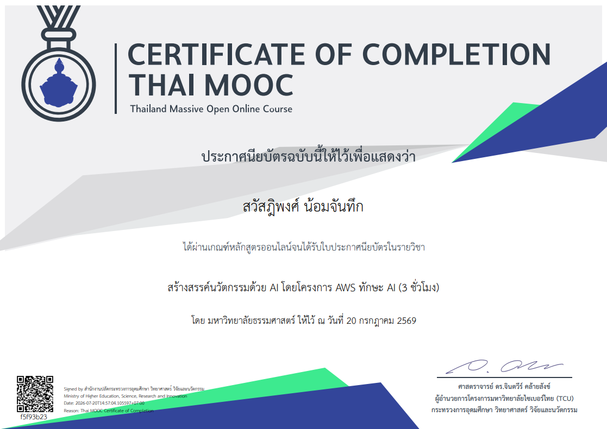

Game Dev
Concept
Game Dev Concept
สนใจในการออกแบบแนวคิดเกม การสร้างระบบเกมและการควบคุมประสบการณ์ผู้เล่นให้มีความน่าสนใจและต่อเนื่อง
- Game mechanics
- Player experience
- Gameplay design
Web Developer • UI/UX Designer
สวัสดีครับ ข้าพเจ้า นาย สวัสฎิพงศ์ น้อมจันทึก ผมเป็นนักพัฒนามืออาชีพที่ชอบออกแบบและพัฒนาเว็บไซต์ที่ใช้งานง่าย มีความสวยงาม และตอบโจทย์ความต้องการของผู้ใช้อย่างแท้จริง
Product-minded developer
เกี่ยวกับ
ชื่อ: นายสวัสฎิพงศ์ น้อมจันทึก
ชื่อเล่น: แซ็ก
อายุ: 20 ปี
ที่อยู่: อ.พรหมบุรี จ.สิงห์บุรี
การอบรม
1. AI for Game Creation: Your First Step to Game Development
2. สร้างสรรค์นวัตกรรมด้วย AI โดยโครงการ AWS ทักษะ AI | AI-Driven Innovation by AWS ThaksaAI
ทักษะ
ความสามารถ
สนใจในการออกแบบแนวคิดเกม การสร้างระบบเกมและการควบคุมประสบการณ์ผู้เล่นให้มีความน่าสนใจและต่อเนื่อง
มุ่งเน้นการเรียนรู้พื้นฐานด้านวิทยาการคอมพิวเตอร์ ความรู้เกี่ยวกับโครงสร้างข้อมูล อัลกอริทึม และการคิดเชิงตรรกะ
ชอบเรียนรู้อย่างต่อเนื่อง เรียนภาษาใหม่ เทคโนโลยีใหม่ และปรับตัวให้ทันกับการเปลี่ยนแปลงของโลกดิจิทัล
เกียรติบัตร

หลักสูตรเพื่อพัฒนาทักษะด้านเทคโนโลยีสารสนเทศและการออกแบบ

การอบรมเชิงปฏิบัติการด้านการสร้างเกมด้วย AI
ติดต่อ